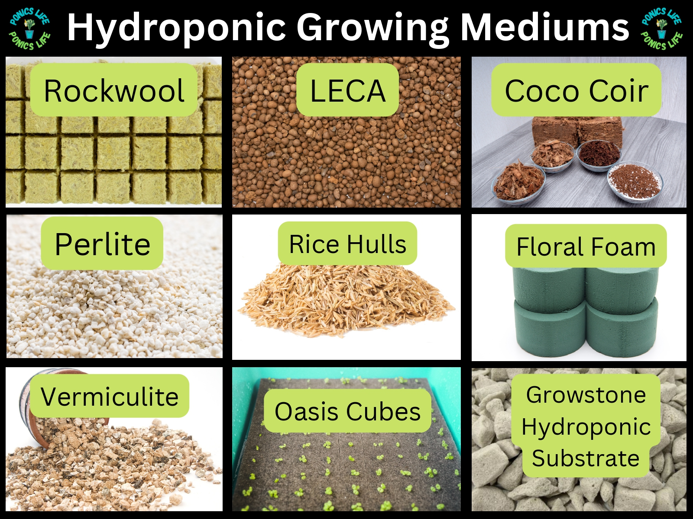

SUBSTRATES & FERTILIZERS

A hydroponic substrate is essentially a soilless growing medium. This is something that allows roots to bind, improves water retention, and maintains air pockets to maximize the health of the root systems of the plants.